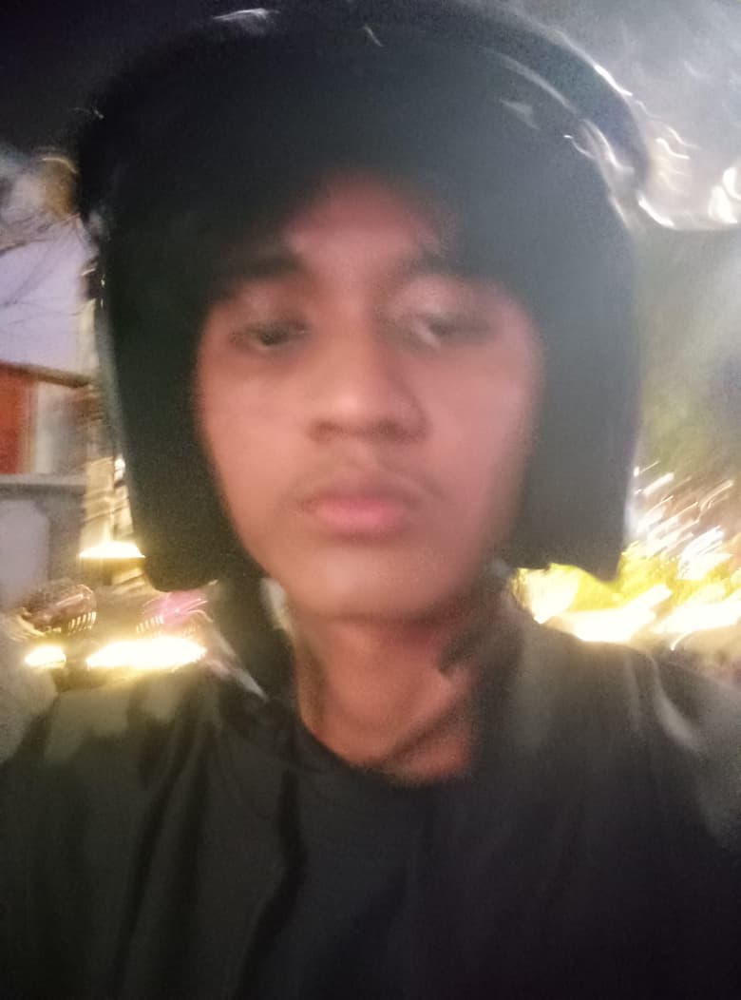

Curriculum Vitae
Imad Ezzat Fanany

Data Pribadi
Nama:
Imad Ezzat Fanany
Tempat, Tanggal Lahir:
Jakarta, 4 April 2006
Alamat:
Jl. H. Taqwa No 108 Jatimakmur Pondokgede Bekasi
Email:
imadezzatf@gmail.com
Pendidikan
Pesantren Tahfidz Qur'an FathanMubiina (2019 - 2024)
STT Terpadu Nurul Fikri - Teknik Informatika (2025 - 2029)
Hobi
Membaca
Olahraga
Ngoding
Musik
Pengalaman
2024 - 2025 : Guru